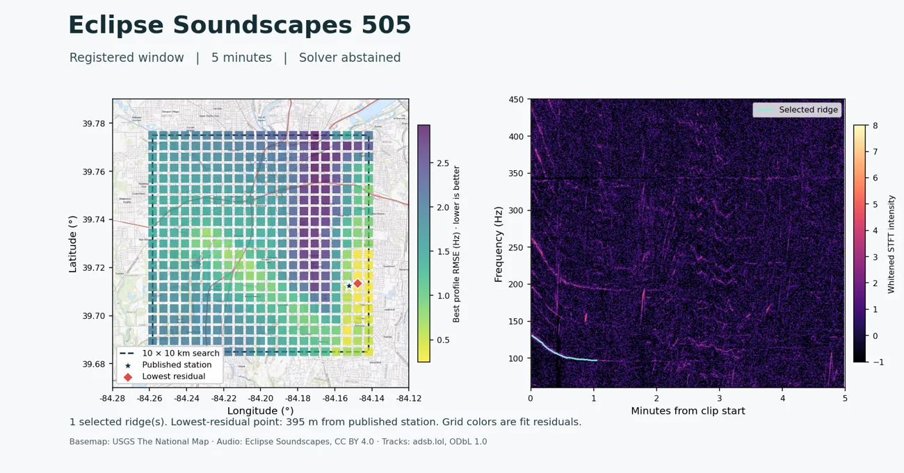

Real field recording
Eclipse Soundscapes 505
A known-answer replay from a public research station in Dayton, Ohio. The solver swept a 10 × 10 km area and allowed a five-minute clock offset in either direction.
The solver abstained
The registered five-minute clip yielded one usable pitch ridge. The lowest-residual point was 395 m from the published station. The fit passed only half of the withheld audio blocks, and the near-best positions spanned 0.70 by 2.38 km.

Replay results
| Window | Ridges | Solver outcome | Diagnostic error |
|---|---|---|---|
| Registered · 5 min | 1 | Abstained | 395 m |
| Extended · 30 min, 25 m grid | 2 | 120 s and 180 s caps reached | — |
| Extended · 30 min, 100 m grid | 2 | Abstained in 78 s | 1.04 km |
| Adjacent · 15 min | 0 | Abstained | — |
| Wrong time · +2 h | 1 | Abstained | 5.25 km |
| Wrong audio · 5 min | 0 | Abstained | — |
The registered clip was development data for the edge-aware detector. The adjacent clip was fixed before listening and came from the same station. The Dayton-area prior was selected with the station location already public. The published coordinates entered scoring only after inference ended.
Reproduce the benchmark
Use the protocol to retrieve the precise WAV interval, crop the dated flight archive, and run the supplied comparisons and controls. The station record contains the original audio.
Audio recorded by Eclipse Soundscapes’ volunteer scientist and archived by Henry Winter and MaryKay Severino, CC BY 4.0. Historical trajectories from adsb.lol contributors, ODbL 1.0. Basemap from USGS The National Map.